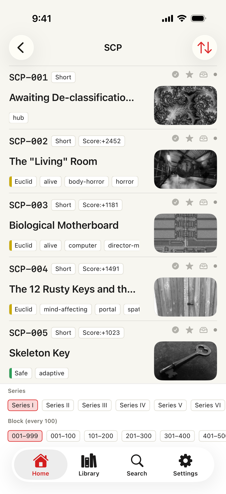
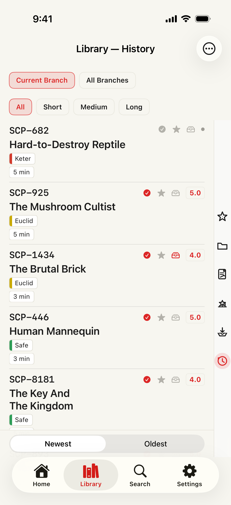

Free
Wyszukiwanie numeru, tytułu, tagów, klasy, długości i oceny Wiki jest darmowe. Historia, oceny, przypomnienia, widżety, podsumowanie obserwacji, aktywność i zaległe lektury także. Ulubione: 20; na później: 100.
SCP docs · 6.0.2 · 2026-10-10
Wyszukiwanie numeru, tytułu, tagów, klasy, długości i oceny Wiki jest darmowe. Historia, oceny, przypomnienia, widżety, podsumowanie obserwacji, aktywność i zaległe lektury także. Ulubione: 20; na później: 100.
Premium usuwa reklamy i dodaje wyróżnienia, notatki, odczyt głosowy, offline, foldery, wyszukiwanie własnych notatek i zapisów, zapisane wyszukiwania i alerty, szczegółowe analizy. Bez limitu subskrypcji dla ulubionych i lektur na później (limit bezpieczeństwa 10 000 na listę). Plan miesięczny i roczny.
Wybierz osobno URL, tytuł, tekst, notatki i wyróżnienia; wybór zostaje zapisany. Sprawdź podgląd przed udostępnieniem, kopiowaniem, zapisem pliku lub do skonfigurowanego celu. Tutaj otworzysz edytor karty. Tekst pochodzi z bieżącego artykułu w czytniku, bez pobierania wielu tekstów z Biblioteki.
Artykuły są w języku oddziału. Aplikacja i witryna: 17 języków. Źródła, autorstwo i licencje są rozstrzygające.
App Store · iPhone / iPad · iOS 17+Reader / Catalog / Library


